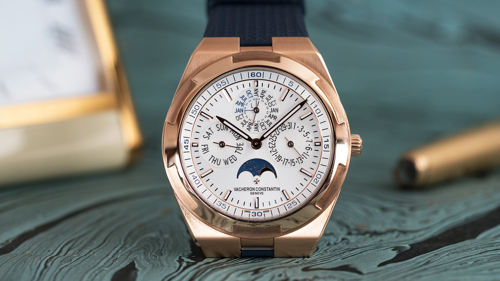
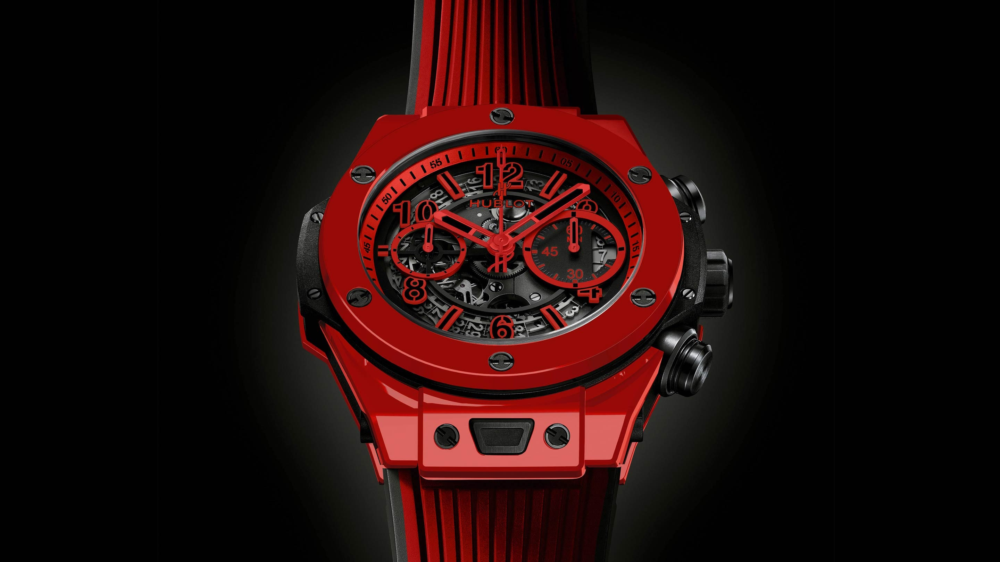
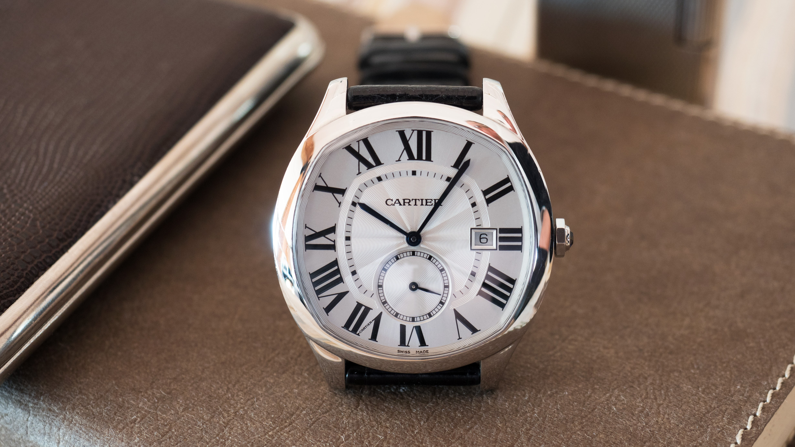

Today's Featured Articles
A Good Start For Swiss Watch Exports In 2018
Switzerland's fledgling watch recovery picked up steam in January. Global exports of Swiss watches jumped 12.6% to 1.62 billion Swiss francs ($1.73 billion), according to data released Tuesday by the Federation of the Swiss Watch Industry (FH). The double-digit jump follows a 2.7% increase in exports in 2017, after a two-year export slump. It's a sign that the recovery that began in the Far East in the second half of 2017 is gaining momentum, as retailers replenish depleted watch stocks. It also backs up a growing number of optimistic forecasts for the Swiss watch industry in 2018.
Smartwatches A Blessing And A Curse For Fossil
Apple's launch of the Watch in April 2015 has had a profound impact on the watch business. Media attention has focused for the most part on whether Apple poses a threat to Swiss watchmakers. (Not without reason: It is affecting the high-volume, under-$1,000 segment of the Swiss industry.) But the Apple Watch's biggest impact, as we noted here a few months ago, has been on the watch industry's huge fashion-watch segment, whose leader is the Texas-based Fossil Group. Fossil Group sales, which were at record highs in 2014, have been clobbered since the Apple Watch launch. So has its stock price.
Signs Of Recovery For Japanese Watchmakers
weaker yen and stronger watch sales in Asia are bringing some relief to Japanese watch producers. Japan’s Citizen and Seiko reported a surge in profits for the first six months of fiscal 2017, ended September 30. Citizen Watch Co. Ltd. reported flat watch sales of ¥77.4 billion ($697.3 million) and a 32% jump in operating profit in the watch division to ¥8.5 billion ($76.6 million). Watch sales at Seiko Holdings Corp. jumped 5% to ¥67.9 billion ($611.7 million). Operating profit rose 21% to ¥4.3 billion ($38.7 million. (Casio, Japan’s third major watch producer, reports its watch data differently.
\
Beyond the Wrist

New York Times
-->Global Headlines
From our Sponsors
Get Complicated with Vacheron
Hublot Will Turn You Red!
Care to Partier?
